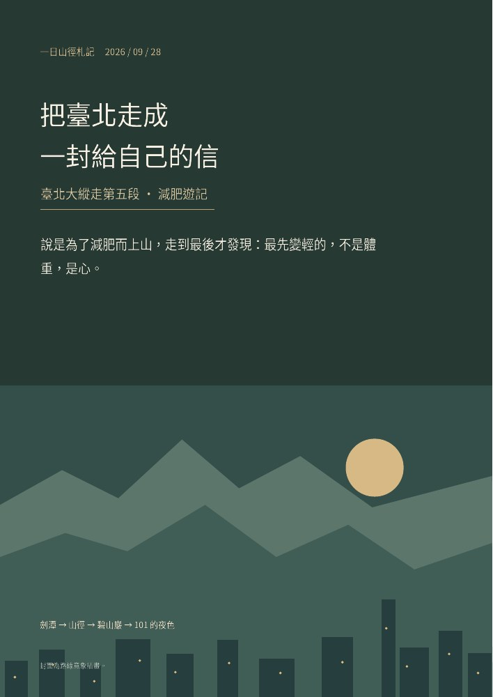

寫作札記
把走過的路、看見的風景與生活裡的片刻收在這裡。也為你留好小說的入口，隨時翻開下一段故事。
沿著日子，把走過的路留下來
時間軸只收錄已正式發表的札記；每多走一段路，就在月光下多留一個座標。
JOURNEY MAP / 旅程地圖
一張會隨札記長大的地圖
第一枚旅程印記落在臺北。這裡不是虛構 GPS 軌跡，而是依已發表札記整理的故事地圖；未來每篇旅行札記都會在這裡留下新的節點。
目前收錄：臺北大縱走第五段 → 碧山巖 → 臺北 101 夜景意象
最新札記
選一個今晚的閱讀方向
想從新作開始，可以讀《兩種天空》；想沿著章節慢慢走，就翻開《浮生歲月》。兩部作品都能依章節閱讀、搜尋與調整字級。
《兩種天空》
從作品首頁進入完整原稿，依章節選讀，或接著上次停下的地方繼續。
開始閱讀 ↗《浮生歲月》
楔子與十四個章節，從故事開端讀起，也可以搜尋喜歡的章節與片段。
瀏覽章節 ↗換一種方式，靠近喵叔的世界
讀到一半想停一會兒，可以看看攝影日記中的城市暮光，或選一支短片。回到故事時，書籤會替你記得進度。
看攝影日記 ↗看影音精選 ↗與讀者交流 ↗